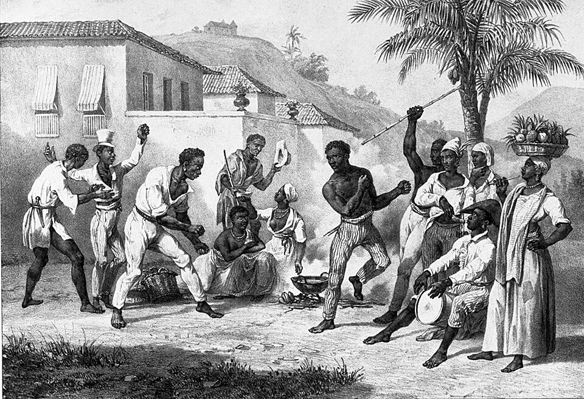

Discussão sobre o desenvolvimento individual e coletivo das populações envolvidas no tema. O que aprendemos quando olhamos para esses continentes não como cenários distantes, mas como parte da nossa própria história?
Estudar África e Américas não é só acumular datas e mapas. É perguntar: o que significa desenvolvimento para os povos desses continentes? Quem decide o rumo de uma região — os próprios habitantes ou forças externas? E como o desenvolvimento de um indivíduo se conecta ao de toda a sua comunidade?
Esta página reúne as reflexões do grupo sobre essas perguntas, separando duas dimensões que andam juntas: o desenvolvimento individual (educação, oportunidades, dignidade de cada pessoa) e o desenvolvimento coletivo (autonomia dos povos, justiça social, preservação cultural).
Crescimento econômico sozinho não é desenvolvimento. Um país pode exportar muito e ainda assim manter sua população em desigualdade. Desenvolvimento, no sentido pleno, é a capacidade de um povo de definir suas próprias prioridades a partir da sua história e cultura.
"Desenvolvimento não é só crescimento econômico — é a capacidade de um povo decidir o próprio futuro a partir da sua história."
— Reflexão do grupo"Estudar África e Américas juntas revela quanto suas trajetórias foram entrelaçadas pela diáspora, pela exploração e pela resistência."
— Reflexão do grupoO desenvolvimento de uma pessoa e o de sua comunidade se alimentam mutuamente.
Acesso à educação, à saúde, ao trabalho digno e à informação. É o que permite a cada pessoa realizar seu potencial. Em África e Américas, séculos de exclusão limitaram esse acesso para grandes parcelas da população — e reverter isso é um dos maiores desafios atuais.
A autonomia dos povos para tomar decisões, preservar sua cultura e distribuir riqueza com justiça. Sem desenvolvimento coletivo, o avanço individual fica restrito a poucos. Sem desenvolvimento individual, falta a base para uma sociedade forte.
Estudar África e Américas não é olhar para fora — é olhar para o espelho.
O Brasil é, ao mesmo tempo, parte das Américas e profundamente ligado à África. Fomos o país que mais recebeu africanos escravizados em todo o tráfico transatlântico, e isso moldou nossa população, nossa cultura, nossa música, nossa comida e nossa fé. Quando estudamos a diáspora africana, estamos estudando a formação do próprio Brasil.
Da mesma forma, somos herdeiros da colonização das Américas: a concentração de terras, as desigualdades regionais e a luta dos povos indígenas por seus territórios são questões vivas no nosso dia a dia. Por isso, o "desenvolvimento das populações envolvidas no tema" não é uma discussão distante — ele inclui a nós mesmos.
Pensar criticamente sobre esses continentes é, no fundo, pensar sobre que tipo de sociedade queremos construir: uma que repete velhas desigualdades, ou uma que aprende com a história para fazer diferente.
Reconhecer-se nessa história é o primeiro passo do desenvolvimento coletivo: ninguém transforma o que não consegue enxergar como seu.

Use estas questões para o debate em sala e para aprofundar a reflexão.
Até que ponto as desigualdades de hoje são consequência direta da colonização — e até que ponto são responsabilidade das escolhas atuais?
Como esses continentes podem aproveitar suas riquezas naturais sem repetir o papel de meros fornecedores de matéria-prima?
Qual o papel da cultura — música, língua, religião, arte — na preservação da identidade de povos que enfrentaram tentativas de apagamento?
Como nós, estudantes no Brasil, estamos ligados a esses processos? O que essa história tem a ver com a nossa?
Não há resposta única para essas perguntas — e é justamente por isso que elas importam. O Espaço Crítico existe para pensar, não para concluir.